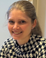
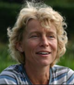
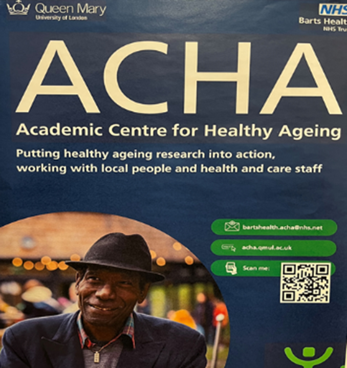
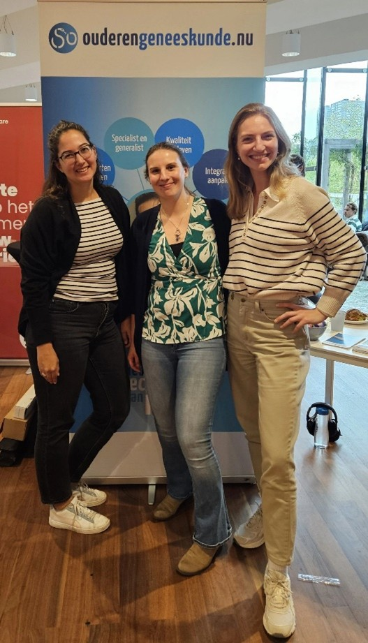
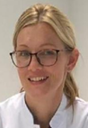
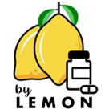

prof. dr. Hedwig Vos, hoofd afd. Public Health en Eerstelijns Geneeskunde LUMC en
hoogleraar Huisartsgeneeskunde
De SOOL is één van de opleidingen tot arts buiten het ziekenhuis waarvoor het ontzettend belangrijk is dat studenten en basisartsen weten wat een specialist ouderengeneeskunde doet, om te kunnen kiezen voor deze opleiding. Vanuit de afdeling PHEG is het mooi om te zien hoe de opleiding steeds beter ingebed raakt in de diverse onderdelen van de afdeling. Dat is zichtbaar in het studentenonderwijs over ouderenzorg, aan de interprofessionele projecten met de huisartsopleiding, en aan onderwijs en stages rondom population health management en digitalisering. En ook samenwerking buiten de afdeling gaat helpen de opleiding beter op de kaart te zetten, zoals de plannen rondom het traineeship samen met de SBOH en andere extramurale opleidingen, zoals arts VG, verslavingsgeneeskunde en huisartsgeneeskunde, waar in 2024 de eerste gesprekken over gestart zijn.
SOOL en huisartsopleiding Leiden

Charlotte de Neve-Leenders, hoofd huisartsopleiding LUMC
De samenwerking tussen de huisartsopleiding en SOOL verdiept zich steeds verder. In 2023 werd een belangrijke mijlpaal bereikt met de start van gezamenlijke opleidingsmomenten. Zo volgden aios van beide opleidingen in september voor het eerst samen de tweedaagse onderwijsbijeenkomsten binnen de module ouderenzorg. In totaal volgen aios twee keer twee dagen gezamenlijk onderwijs. In het derde jaar volgt bovendien nog interprofessioneel onderwijs (IPO) over farmacotherapie, waarbij ook apothekers in opleiding aansluiten.
In 2024 lag de focus op het bestendigen van deze samenwerking. De gezamenlijke onderwijsdagen zijn succesvol herhaald en hebben zich inmiddels bewezen als waardevolle leeromgeving, waarin interprofessioneel leren en gedeeld begrip centraal staan. Hoewel er dit jaar geen nieuwe gezamenlijke onderdelen zijn toegevoegd, vormt de stabiele voortzetting een stevige basis voor verdere verdieping en uitbreiding in de toekomst.
Een nieuw landelijk opleidingsplan en curriculum

Anna van Daalen, specialist ouderengeneeskunde, coördinator onderwijs basismodule
Tamara Wanner, specialist ouderengeneeskunde, coördinator onderwijs verdiepingsfase
Beatrijs de Leede, onderwijskundige, opleidingscoordinator
Per september 2024 is er een nieuw landelijk opleidingsplan (LOP2024) voor de opleiding tot specialist ouderengeneeskunde van kracht. Achter de schermen is er twee jaar hard gewerkt aan het LOP2024, waarbij naast specialisten ouderengeneeskunde van alle vijf de instituten, ook onderwijskundigen, opleiders en aios betrokken waren. Het resultaat is een toekomstbestendig opleidingsplan dat gericht is op de betrokkenheid van de aios, waarbij zij zelf verantwoordelijk zijn voor hun leerproces, en dat nadrukkelijk gericht is op groei en ontwikkeling. Voor meer informatie over het LOP2024 kunnen geïnteresseerden terecht op de website van SOON, de praatplaat of het LOP2024.
Samen met de collega’s van SOOL zijn we begonnen met de implementatie van het nieuwe opleidingsplan. Het doel hiervan is om de praktijkstages en de onderwijsperiodes beter op elkaar aan te laten sluiten en ervoor te zorgen dat het onderwijs beter aansluit op de praktijk. Daarnaast wordt er veel aandacht besteed aan het stimuleren van de aios om zelf de regie over hun opleiding te nemen. Ook de opleiders van de eerste aios-groep zijn actief betrokken bij het nieuwe opleidersplan, omdat dit hen vraagt om een andere werkwijze en mindset.
Inmiddels zijn er twee groepen gestart, en we zien dat het onderwijs beter aansluit op de stages. Dit brengt soms organisatorische uitdagingen met zich mee, maar het resultaat is dat de aios sneller aan hun persoonlijke leerdoelen kunnen werken, doordat het assessment nu korter is dan voorheen. De basisfase van het nieuwe curriculum is al per september van start gegaan, en de verdiepingsfase wordt per september 2025 geïntroduceerd.
Op dit moment wordt er hard gewerkt door onze docenten om handleidingen te controleren en deze toe te voegen aan SQILL, ons nieuwe onderwijs ondersteuningssoftwareprogramma. Daarnaast blijven we nieuw onderwijs ontwikkelen. Zo is een van onze docenten druk bezig met een nieuw interprofessioneel onderwijsproject over ‘Taakherschikking’, waarbij de samenwerking is gezocht met de Verpleegkundig specialistenopleiding in Leiden en de Physician Assistant opleiding in Amsterdam.
We kijken met vertrouwen uit naar de start van de verdiepingsfase in september 2025.
Selectieprocedure 2024
Beatrijs de Leede, onderwijskundige, opleidingscoördinator
Bij SOOL start de opleiding zowel in maart als in september. In 2024 hebben in totaal 45 kandidaten gesolliciteerd voor een opleidingsplaats. 40 kandidaten zijn aangenomen, 4 kandidaten zijn afgewezen en 1 kandidaat heeft zichzelf teruggetrokken. Uiteindelijk zijn 43 AIOS gestart met de opleiding, aangezien er nog 3 AIOS al eerder geselecteerd waren, maar later wensten te starten.
4 AIOS waren al medisch specialist en hebben de keuze gemaakt om te scholen naar specialist ouderengeneeskunde; zij volgen een verkort opleidingstraject. 1 AIOS doet de opleiding in een gecombineerd onderzoekstraject met onderzoek als AIOTO.
Interprofessionele onderwijsdagen samen met huisartsen in opleiding
In 2024 is een voortvarend vervolg gegeven aan de interprofessionele opleidingsdagen (IPO) in samenwerking met de huisartsgeneeskunde opleiding. Voortbouwend op de succesvolle start in september 2023, waarin de interprofessionele onderwijsdagen in de eerste lijn van start gingen na de nodige logistieke afstemming, heeft de samenwerking zich in 2024 succesvol verder gecontinueerd.
Gedurende het jaar hebben AIOS specialisten ouderengeneeskunde in hun ambulante stageperiode gezamenlijk met huisartsen in opleiding in hun chronische stageperiode weer tweemaal twee dagen onderwijs gevolgd. De eerste tweedaagse staat voor een groot deel in het teken van samenwerken in de eerste lijn. In de tweede tweedaagse komt onder andere het zorgbehandelplan, “de wijkscan” en financiering in de eerste lijn aan bod. Er wordt afgesloten met “het perspectievenspel” waarin met elkaar vanuit verschillende perspectieven op verschillende niveaus ingewikkelde casuïstiek wordt besproken. Belangrijke thema’s zoals autonomie versus veiligheid komen hier op tafel.
Nieuw in 2024 was de participatie van ouderen aan het onderwijs. Samen met de AIOS denken zij (onder andere) mee over grote vraagstukken: Op één van de onderwijsmiddagen wordt nagedacht over hoe de ouderenzorg in de toekomst duurzaam georganiseerd moet worden. Tijdens deze middag wordt aan de AIOS gevraagd wat ze zouden doen met 50 miljoen euro. Het is een vrije denkoefening waarbij de toekomstige dokters mogen bedenken, hoe ze met dat geld de ouderenzorg op een originele manier beter kunnen organiseren. Uiteraard kan de visie van de ouderen zelf hierbij niet ontbreken!
Inmiddels hebben we twee LED (Learning Experience Design) sessies met elkaar gehad om het IPO onderwijs verder door te ontwikkelen. Gedacht wordt aan het verder verbreden naar andere professionals in opleiding in de eerste lijn maar ook aan specialisten in opleiding in de tweede lijn.
Daarnaast is een droom dat de specialisten ouderengeneeskunde in opleiding en de huisartsen in opleiding gedurende de hele opleiding met elkaar gaan optrekken op verschillende “niveaus”: door gezamenlijk onderwijs, een digitaal platform waar alle AIOS gebruik van maken en informele momenten. Hierdoor zal een constructieve samenwerking rondom de kwetsbare patiënt in de eerste lijn met de paplepel worden ingegoten!
De lijn wetenschappelijke vorming
dr. Maaike Scheffers-Barnhoorn, docent-specialist ouderengeneeskunde, coördinator lijn
wetenschappelijke vorming SOOL
Een vraag vanuit het MT voor een terugblik op 2024? Altijd een plezier om dit te mogen doen, want zo'n moment is ook voor ons als team waardevol om te bepalen wat het jaar heeft gebracht, en wat er voor het nieuw jaar nog aan ontwikkel- en leerpunten zijn.
Waar hebben we ons dan vanuit de lijn wetenschappelijke vorming mee bezig gehouden het afgelopen jaar? Naast 'business at usual' - dat wil zeggen onze vaste onderdelen van de lijn zoals de welbekende CATs, referaten, kritisch lezen en het WLO - hebben we dit jaar ons inziens een mooie stap gezet met de introductie van de 'entree toets'. De aanleiding hiervoor is dat we merken dat de wetenschappelijke kennis en vaardigheden en de eerdere ervaring met wetenschap sterk varieert bij aanvang van de opleiding. We hopen dat de entree toets ondersteunend kan zijn voor zowel de aios en docent om zicht te krijgen op reeds al verworven wetenschappelijke competenties, en op de eventuele kennislacunes. Om hiermee beter te kunnen aansluiten bij individuele leerdoelen en leervragen.
Nieuw in 2024 was de participatie van ouderen aan het onderwijs. Samen met de AIOS denken zij (onder andere) mee over grote vraagstukken: Op één van de onderwijsmiddagen wordt nagedacht over hoe de ouderenzorg in de toekomst duurzaam georganiseerd moet worden. Tijdens deze middag wordt aan de AIOS gevraagd wat ze zouden doen met 50 miljoen euro. Het is een vrije denkoefening waarbij de toekomstige dokters mogen bedenken, hoe ze met dat geld de ouderenzorg op een originele manier beter kunnen organiseren. Uiteraard kan de visie van de ouderen zelf hierbij niet ontbreken!
Inmiddels hebben we twee LED (Learning Experience Design) sessies met elkaar gehad om het IPO onderwijs verder door te ontwikkelen. Gedacht wordt aan het verder verbreden naar andere professionals in opleiding in de eerste lijn maar ook aan specialisten in opleiding in de tweede lijn.
Daarnaast is een droom dat de specialisten ouderengeneeskunde in opleiding en de huisartsen in opleiding gedurende de hele opleiding met elkaar gaan optrekken op verschillende “niveaus”: door gezamenlijk onderwijs, een digitaal platform waar alle AIOS gebruik van maken en informele momenten. Hierdoor zal een constructieve samenwerking rondom de kwetsbare patiënt in de eerste lijn met de paplepel worden ingegoten!
Hoe heeft Engeland zijn ouderenzorg georganiseerd? En kunnen wij daar van leren?
In samenwerking met het ACHA, het Academic Centre for Health Aging in Noord Oost Londen zijn wij een keuzestage naar Engeland aan het ontwikkelen.

Engeland kent de National Health Service - gratis voor gebruikers -, regionaal georganiseerde sociale zorg en een interne markt die wordt aangestuurd door commissioning. Het specialisme klinische geriatrie is veel groter dan in Nederland, met een subspecialisme community geriatrics welke zich bezig houdt met kwetsbaarheid en chronische aandoeningen thuis en in het verpleeghuis.
De verpleeghuizen vallen niet onder de NHS maar zijn vooral particulier gefinancierd. De palliatieve zorg en psychiatrie voor ouderen zijn zeer ontwikkelde specialismen in het Verenig Koninkrijk. Ook initiatieven als het Rapid Respons Team, de Virtual Ward en de aparte specialismen palliatieve zorg en psychiatrie voor ouderen maakt het de moeite waard om een kijkje te nemen in de ouderenzorg van dit land.
Na een grondige voorbereiding in Nederland gaat een groep AIOS specialisten ouderengeneeskunde, huisartsengeneeskunde en wijkverpleegkundigen voor twee weken naar London. Daarna volgt er in Nederland reflectie en implementatie van het geleerde. Deze stage is gebaseerd op de interprofessionele stage naar Cuba waar we drie maal naar toe zijn gegaan.
Dit jaar zijn we nog bezig met de voorbereiding, in 2026 hopen we met een eerste groep naar London te kunnen afreizen.
Het afgelopen jaar is er op PR gebied veel ondernomen. Via SOON had SOOL samenwerkingsovereenkomsten met de Medische Faculteit der Leidse Studenten (MFLS) en de Medische Faculteits Vereniging Rotterdam (MFVR). Ook heeft SOOL samengewerkt met de afdeling communicatie van het LUMC.
Evenementen en publicaties
Vanuit de samenwerking met de MFLS en de MFVR zijn er aios en stafleden naar evenementen geweest om ons vakgebied te promoten. Zo waren er de carrièredag en het speeddate event van de MFLS en vanuit de MFVR waren er het co-congres en medisch carrière congres. Meerdere enthousiaste aios hebben hier geneeskundestudenten van het LUMC en het Erasmus MC gesproken ter promotie van het specialisme ouderengeneeskunde en de opleiding bij SOOL.
Daarbij is er in vijf edities van de Predoctor, het faculteitsblad van de MFLS, een bijdrage geleverd door een aios van SOOL in de vorm van een artikel passend bij het thema. In 2024 zijn er artikelen geschreven over de thema’s: hartig, spanning, chaos, verlichting en retro. De publicaties zijn te lezen via de website van de MFLS.
SOOL op social media
Naast de evenementen en publicaties in de Predoctor, was SOOL in 2024 ook actief op sociale media. Naast onze eigen accounts op LinkedIn en Instagram zijn er, vanuit de samenwerking met de MFLS, berichten gedeeld op de Instagram stories van de faculteitsvereniging. Voornamelijk om evenementen te promoten die SOOL heeft georganiseerd of waar SOOL deel vanuit maakte, zoals de speeddates van SOON, de Leidse Ouderengeneeskundedag, het AMAN symposium en de dr. House avond voor de Next Level Dokter campagne.
Verder is met de communicatie afdeling van het LUMC een ‘Instagram take-over’ gerealiseerd. Bij de take-over heeft een aios van SOOL een dag tijdens de GRZ-stage laten zien. Doordat dit ook op het Instagram-account van het LUMC zelf gedeeld werd, is er een groot bereik behaald en hebben zo’n 2500 personen de berichten gezien. Wil je het terugzien? Dat kan! Kijk bij de hoogtepunten op de a href=https://www.instagram.com/lumc_sool/>Instagram van SOOL.
Wisseling leden PR-commissie
In verband met het diplomeren van de voltallige PR-commissie in het voorjaar van 2024, is er in het najaar ’24 een nieuwe PR-commissie geïnstalleerd. We bedanken oud-aios Jenny Katsman en Mary Joanne Verhoef voor hun inzet de afgelopen jaren! Het stokje is overgedragen aan aios Janette van Wulfften Palthe, Dirk Hoogenkamp en Matthijs Houdijk.

Figuur 1. aios Jeanet de Raaf, Lisette Verkerk en Janette van Wulfften Palthe
tijdens het MFVR carrière congres
We zien uit naar een mooi 2025 met weer veel fijne samenwerkingen ter promotie van de ouderengeneeskunde en de opleiding bij SOOL!
Combinatie van de opleidingen specialisme ouderengeneeskunde en
klinische farmacologie: een Leidse pilot.
drs. Robin van Luipen, MBA, specialist ouderengeneeskunde i.o, klinisch farmacoloog i.o.
Inleiding
Dankzij de pilot combinatie opleiding Specialist Ouderengeneeskunde (SOOL, LUMC) en Klinische Farmacologie en Toxicologie (NVKFB, afdeling KFT LUMC) heb ik de mogelijkheid om in 3 jaar tijd dubbel te specialiseren. Met drie pilot kandidaten exploreren wij de haalbaarheid van de duale opleiding en helpen wij een toekomstige opleiding, als ook het werkveld, vormgeven.
Meerwaarde
De meerwaarde van deze combinatie is weinig verrassend, echter niet te onderschatten. Ons vak van de ouderengeneeskunde bevat een veelheid aan medicatie gerelateerde vraagstukken. Polyfarmacie, proactieve zorgplanning (voorheen ACP) en ‘patient based medicine’ zijn slechts enkele voorbeelden. De Specialist Ouderengeneeskunde is bedreven in het doorgronden van lange lijsten medicatie, reviewen en waar mogelijk saneren volgens de laatste richtlijnen. De Klinisch Farmacoloog gaat hierin een stap verder door uitgebreidere kennis van kruisverbanden en mogelijkheden op dit vlak. Ondersteund met de kennis van o.a. farmacogenetica, -dynamiek en -economie. Meer evidence based zonder in te leveren op patiëntgerichtheid, bekend als Precision Medicine.
Toekomst visie / hoop
Namens mijzelf en de collega’s uit het werkveld ouderengeneeskunde kan ik niets anders dan de meerwaarde van de klinische farmacologie in dit werkveld onderstrepen.
Door de directe betrokkenheid bij de praktijk zie ik welke farmacologische vraagstukken er spelen. Hierdoor kunnen onderzoek en toekomstig onderwijs vormgegeven worden vanuit de praktijk. De vragen van gister, zijn de antwoorden van vandaag en het onderwijs van morgen.
SOOL farmacotherapie-nascholingen: een facelift van het FTO

dr. Monica van Eijk, docent- specialist ouderengeneeskunde en kaderarts opleiden
In 2024 is een start gemaakt met een nieuwe service van SOOL voor opleidingsinstellingen: het faciliteren van betaalde, geaccrediteerde, professionelere farmacotherapie-nascholingen, met als doel een kwaliteitsslag te maken met het FTO en deelnemende instellingen te ontzorgen.
Een start hiermee werd gemaakt in de regio Leiden bij de zorgorganisaties ActiVite, Alrijne en Wijdezorg. Graag delen wij daar de eerste ervaringen over.
Waarschijnlijk een herkenbaar scenario: wanneer een FTO op het programma staat bij het overleg van de medische dienst, krijgt iemand de taak toebedeeld om dit voor te bereiden met de apotheker. Vervolgens wordt, vaak met enige moeite en gezonde tegenzin, een verhaal voorbereid over een onderdeel van het formularium. De apotheker vult voorschrijfcijfers aan en eventueel kunnen aanpassingen aan het formularium gemaakt worden, maar dat is lang niet altijd het geval. Er zijn echter ook collega’s die er juist veel werk van maken en er plezier uit halen om dit onderwijs goed neer te zetten. Zo ook ondergetekende, en zeker in samenwerking met internist ouderengeneeskunde en klinisch farmacoloog Leonie van Meer. Hieruit ontstond “by Lemon” (Leonie & Monica).

Samen hebben wij nagedacht hoe wij organisaties kunnen ontlasten van deze taak en hoe we een programma van onderwijs kunnen maken wat aanspreekt, inspireert en in de dagelijkse praktijk verbetering van medicatiezorg oplevert. Dat lijkt aardig te lukken. Voor het farmacotherapie onderwijs, wat overigens geheel digitaal plaatsvindt, hebben wij verschillende werkvormen die wij gebruiken om de participatie van de deelnemers te vergroten. Wij bespreken altijd casuïstiek, en de farmacologie heeft ook een vaste plek gekregen in het onderwijs. De feedback van de deelnemers is lovend en stimuleert ons om dit onderwijs voor 2025 ook te willen voorbereiden en geven. De uitdaging is de aansluiting te blijven vinden met de betrokken apothekers, en vooral te kijken naar hoe de taken verdeeld kunnen worden, zowel tijdens onderwijs momenten zelf als tijdens de voorbereiding en daarnaast ook tijdens de reguliere werkzaamheden. Een voorbeeld van dat laatste is het up-to-date houden van het formularium. Wat is nu eigenlijk de plek ervan en wiens verantwoordelijkheid is dat? In onze optiek is dat vooral een gezamenlijke verantwoordelijkheid en is het formularium een heel prettig handboek, voor alle leden van het medisch team te kunnen gebruiken en daarom prettig wanneer de laatste stand van zaken van kennis en wetenschap vertegenwoordigd is. Het FTO biedt een mooie ingang om het formularium te verbeteren.
Het inhoudelijke programma van het farmacotherapie onderwijs startte met een tweeluik waarbij polyfarmacie en medicatiebeoordeling zijn behandeld. Dit vormt de basis voor het onderwijs. Hierbij zijn definities en manieren van aanpak met hulpmiddelen en voorbeelden het uitgangspunt. In breakout-rooms werd geoefend met casuïstiek in kleine groepjes met hulpmiddelen. Voor 2025 hebben wij een carrousel van inhoudelijke onderwerpen, die relevant zijn voor de praktijk, i.e. pijn, psychofarmaca, CVRM, antibiotica, neurologie, interne geneeskunde. Er wordt vooraf een voor het onderwijs relevant artikel gestuurd, waar ook vragen over worden gesteld. Daarnaast wordt aanwezigheid bijgehouden dmv foto’s te maken tijdens het onderwijs. Per onderwijsmoment worden via SOOL 2 accreditatiepunten toegekend.
Voor meer informatie over (deelname aan) dit scholingsprogramma, schroom niet om contact te zoeken via sool@lumc.nl.
Paula
Paula Broersen, onderwijskundige
Op 6 juli 2024 heeft mijn leven een drastische wending genomen. Jullie zijn hier waarschijnlijk allemaal van op de hoogte. Ik vind het moeilijk te omschrijven wat voor een impact dit heeft op mijn leven en op de levens van mensen om mij heen. Het is keihard werken, vechten, en ook lol hebben want van iedere dag proberen we er wat van te maken en de mooie dingen te zien. Het is een soort constante pdca cyclus die wij volgen in mijn revalidatieproces. We maken een planning en voeren die uit, we monitoren hoe dat gaat en passen onze strategie weer wat aan. Het vraagt enorm veel doorzettingsvermogen, vertrouwen houden, in het nu leven en de kleine dingen zien en daarvan genieten. Langzaamaan wordt mijn lichaam stabieler, dat gaat met vallen en opstaan. Wat mij 'op de been houdt' is de steun en liefde van iedereen om mij heen, ook van jullie. Dankjulliewel, het doet mij ontzettend goed. Momenteel pak ik met veel plezier weer een beetje werk op en vind het leuk om contact te hebben met mijn collega's. Wie weet tot gauw!